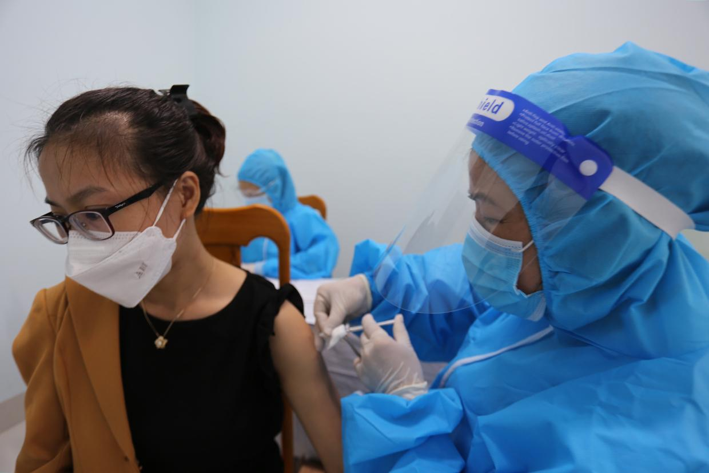

Gia Lai tiếp tục kiểm soát thật tốt địa bàn để phòng-chống dịch
GLO)- Chiều 23-8, Ban Thường vụ Tỉnh ủy Gia Lai có buổi làm việc với Ban Chỉ đạo phòng-chống dịch Covid-19 tỉnh để nghe báo cáo về tình hình công tác phòng-chống dịch Covid-19 trên địa bàn.
Chủ trì buổi làm việc có các đồng chí: Hồ Văn Niên-Ủy viên Ban Chấp hành Trung ương Đảng, Bí thư Tỉnh ủy, Chủ tịch HĐND tỉnh; Châu Ngọc Tuấn-Phó Bí thư Thường trực Tỉnh ủy, Trưởng đoàn đại biểu Quốc hội tỉnh; Võ Ngọc Thành-Phó Bí thư Tỉnh ủy, Chủ tịch UBND tỉnh; Rah Lan Chung-Phó Bí thư Tỉnh ủy, Trưởng ban Nội chính Tỉnh ủy.
Cơ bản kiểm soát dịch bệnh
Báo cáo tại buổi làm việc, Phó Chủ tịch UBND tỉnh Nguyễn Thị Thanh Lịch-Phó Trưởng ban Thường trực Ban Chỉ đạo phòng-chống dịch Covid-19 tỉnh-cho biết: Tính đến đầu giờ chiều 23-8, toàn tỉnh phát hiện 446 ca nhiễm SARS-CoV-2 trên địa bàn 7 huyện, thị xã, thành phố; 57 trường hợp đã xuất viện, hiện còn 389 trường hợp đang cách ly, điều trị. Các trường hợp trên hầu hết là công dân đi về từ các địa phương có dịch, có 21 trường hợp lây nhiễm trong cộng đồng. Về các ổ dịch trong cộng đồng đã cơ bản khoanh vùng, phong tỏa kịp thời, không để dịch bệnh lây lan ra diện rộng.
| Quang cảnh buổi làm việc của Ban Thường vụ Tỉnh ủy với Ban Chỉ đạo phòng-chống dịch Covid-19 tỉnh. Ảnh: Đức Thụy |
Các địa phương tiếp tục duy trì 42 điểm, chốt kiểm soát dịch bệnh tại các cửa ngõ ra vào địa bàn tỉnh và các địa phương, 29 khu vực cách ly tập trung và cơ sở y tế. Từ đầu tháng 8 đến nay, 4 chốt kiểm soát dịch của tỉnh và các huyện đã kiểm tra 109.582 lượt phương tiện vào địa bàn, đo thân nhiệt 180.534 lượt người, khai báo y tế cho 114.328 trường hợp và phun khử khuẩn 5.814 lượt phương tiện. Đáng chú ý, lực lượng tại chốt đã kịp thời phát hiện, đưa đi cách ly tập trung 1.304 trường hợp từ vùng dịch trở về; phát hiện 13 phương tiện vận tải lợi dụng được cấp thẻ “luồng xanh” để chở người từ vùng dịch về địa bàn. Bên cạnh đó, công tác tiêm vắc xin đảm bảo đúng tiến độ. Toàn tỉnh đã tổ chức tiêm 97.671 liều, đạt tỷ lệ 82,32% số đối tượng theo quy định. Ngoài ra, việc tổ chức lưu thông hàng hóa, tạo điều kiện cho hoạt động sản xuất kinh doanh trên địa bàn tỉnh không bị ách tắc.
Phó Chủ tịch Ủy ban MTTQ Việt Nam tỉnh Phạm Thị Lan cho hay: Hoạt động tiếp nhận các nguồn tài trợ, ủng hộ, đóng góp cho công tác phòng-chống dịch Covid-19 tiếp tục được quan tâm. Từ ngày 31-5 đến 19-8, Ủy ban MTTQ Việt Nam tỉnh đã tiếp nhận hơn 22,3 tỷ đồng từ 351 tổ chức, cá nhân và Ủy ban MTTQ Việt Nam các cấp ủng hộ công tác phòng-chống dịch.
Về công tác chuẩn bị cho năm học mới 2021-2022, Giám đốc Sở Giáo dục và Đào tạo Lê Duy Định nêu phương án: “Ngành Giáo dục xây dựng phương án dạy học trực tuyến, không tập trung học sinh đến trường. Qua khảo sát sơ bộ có 806 em học sinh đang mắc kẹt ở TP. Hồ Chí Minh và các tỉnh miền Nam không về được. Ngành thực hiện theo hướng dẫn của Bộ Giáo dục và Đào tạo, thống nhất học sinh ở đâu thì học ở đó”.
Phó Chủ tịch UBND tỉnh Nguyễn Thị Thanh Lịch cho rằng: Từ ngày 25-7 đến nay, với sự bình tĩnh, linh hoạt áp dụng các phương án chống dịch phù hợp với tình hình địa phương, sự vào cuộc nhanh, quyết liệt, kịp thời và đồng bộ của các lực lượng tham gia chống dịch đã giúp tỉnh cơ bản kiểm soát được dịch; đảm bảo cho việc thực hiện “mục tiêu kép”: vừa chống dịch vừa phát triển kinh tế.
Tiếp tục triển khai đồng bộ các mặt công tác
Dự báo tình hình sắp tới, Phó Chủ tịch UBND tỉnh Nguyễn Thị Thanh Lịch thông tin: Hiện nay, cửa khẩu bên phía Vương quốc Campuchia đã mở nên lượng người Việt hồi hương thông qua Cửa khẩu Quốc tế Lệ Thanh dự kiến tăng đột biến. Theo đó, Công an tỉnh, Bộ đội Biên phòng tỉnh cần tăng cường công tác quản lý nhà nước về xuất-nhập cảnh; phối hợp với các lực lượng chức năng quản lý, giám sát chặt chẽ tuyến biên giới, cửa khẩu, đường mòn, lối mở; kịp thời phát hiện, xử lý nghiêm các trường hợp nhập cảnh trái phép.
| Đồng chí Hồ Văn Niên-Ủy viên Ban Chấp hành Trung ương Đảng, Bí thư Tỉnh ủy, Chủ tịch HĐND tỉnh phát biểu tại buổi làm việc. Ảnh: Đăng Vũ |
Phó Trưởng ban Thường trực Ban Chỉ đạo tỉnh cũng nêu rõ: Dịch bệnh từ các tỉnh thành kéo dài chưa được kiểm soát dẫn đến khó khăn về kinh tế, khan hiếm hàng hóa do sản xuất bị ngưng trệ, hệ thống y tế tuyến trên bị ảnh hưởng nghiêm trọng. Do vậy, việc tiếp cận để điều trị bệnh, nhất là người bị bệnh hiểm nghèo sẽ hạn chế, việc thiếu vật tư thiết yếu, hóa chất, thuốc men, sinh phẩm, oxy... là những vấn đề dự lường. Bên cạnh đó, biến thể vi rút với nhiều dạng, phức tạp, nguy hiểm, chưa có thuốc điều trị đặc hiệu... Với nhân lực hiện nay của ngành Y tế tỉnh thì khả năng sẽ quá tải nếu lượng ca bệnh tăng lên. Vì vậy, Ban Chỉ đạo tỉnh sẽ tiếp tục thực hiện các biện pháp phòng-chống dịch với quan điểm đề cao bảo vệ tính mạng, sức khỏe người dân là trên hết, trước hết.
Tại cuộc họp, các Ủy viên Ban Thường vụ Tỉnh ủy đã ghi nhận những nỗ lực trong việc triển khai các mặt công tác phòng-chống dịch cũng như thống nhất với các đề xuất của Thường trực Ban Chỉ đạo. Đồng thời, các Ủy viên Ban Thường vụ Tỉnh ủy cũng đề nghị Ban Chỉ đạo tiếp tục đẩy mạnh công tác thông tin, tuyên truyền đến người dân về tình hình dịch bệnh; bổ sung thêm một số đối tượng ưu tiên tiêm vắc xin như người nhà của lực lượng tuyến đầu chống dịch; có quy định chặt chẽ hơn các đối tượng thực hiện cách ly tập trung, cách ly tại nhà; kiểm soát và có hình thức xử lý đối với các trường hợp vi phạm biện pháp phòng-chống dịch bệnh...
|  |
| Việc tiêm vắc xin phòng Covid-19 phải thực hiện theo đúng đối tượng đã được ban hành. Ảnh: Văn Ngọc |
Phó Bí thư Thường trực Tỉnh ủy Châu Ngọc Tuấn đề nghị Ban Chỉ đạo cần rà soát kỹ các đối tượng ưu tiên đang bị kẹt ở TP. Hồ Chí Minh, tỉnh Bình Dương, Đồng Nai để tổ chức đón về. Sở Giáo dục và Đào tạo cũng cần tiếp tục tìm kiếm giải pháp căn cơ, phù hợp trong tổ chức dạy và học cho đối tượng học sinh vùng dân tộc thiểu số.
Chủ tịch UBND tỉnh Võ Ngọc Thành lưu ý Ban Chỉ đạo cần tổ chức chặt chẽ hơn nội quy trong khu cách ly nhằm tránh lây nhiễm chéo. Các cơ sở khám-chữa bệnh phải nêu cao cảnh giác, thực hiện phân luồng, kiểm tra nghiêm ngặt trong việc tiếp nhận, điều trị bệnh nhân.
| Bí thư Tỉnh ủy Hồ Văn Niên: “Chúng ta đang có 10 địa phương chưa ghi nhận ca bệnh nào, được coi là “vùng xanh” cần phải được bảo vệ thật tốt. Các lực lượng vũ trang cần kiểm soát thật tốt, chặt chẽ, nghiêm ngặt các chốt biên giới, chốt cửa ngõ vào tỉnh, huyện nhằm đảm bảo công tác phòng-chống dịch hiệu quả cho tỉnh”. |
Kết luận buổi làm việc, Bí thư Tỉnh ủy Hồ Văn Niên yêu cầu Ban Chỉ đạo tỉnh tiếp tục kiểm soát thật tốt địa bàn, không tiếp nhận người tự ý về từ vùng có dịch đang thực hiện Chỉ thị 16; chỉ tiếp nhận với các trường hợp có trao đổi, bất khả kháng, theo tổ chức. Duy trì các chốt kiểm soát của tỉnh và của các địa phương, khu vực biên giới do Bộ Chỉ huy Bộ đội Biên phòng tỉnh chủ trì; xử lý nghiêm người và các phương tiện vi phạm; tất cả phương tiện đi qua các chốt phải được kiểm tra.
| Chốt kiểm soát phòng-chống dịch Covid-19 khu vực cầu 110 (huyện Chư Pưh) ngày 22-7-2021. Ảnh: Thúy Trinh |
Cùng với đó, Bí thư Tỉnh ủy cũng yêu cầu Ban Chỉ đạo tỉnh cần xử lý tốt thông tin để thông báo tình hình dịch cho người dân biết, để người dân chủ động, không gây hoang mang, dao động, song không chủ quan, từ đó tạo sự tin tưởng vào sự lãnh đạo, chỉ đạo và công tác phòng-chống dịch của tỉnh. Ban Chỉ đạo phòng-chống dịch các cấp cần quán triệt, thực hiện tốt nội quy tại các khu cách ly nhằm tránh lây nhiễm chéo; khẩn trương bàn giao các cơ sở cách ly là trường học cho ngành Giáo dục nhằm đảm bảo cơ sở vật chất cho năm học mới. Đồng thời, tiếp tục phát huy vai trò của tổ Covid cộng đồng trong giám sát người cách ly y tế tại nhà, tích cực điều tra, truy vết, kiểm soát ngay khi có trường hợp F0, F1. Bí thư Tỉnh ủy cũng yêu cầu tăng cường cơ sở vật chất, nhân lực, vật lực cho các cơ sở điều trị bệnh nhân Covid-19. Ban Chỉ đạo tỉnh phải xây dựng phương án xử lý trong trường hợp có bệnh nhân F0 tử vong. Việc tiêm vắc xin phải thực hiện theo đúng đối tượng đã được ban hành.
Bên cạnh đó, Bí thư Tỉnh ủy yêu cầu các sở, ngành, địa phương tiếp tục thực hiện tốt chính sách hỗ trợ người lao động, người sử dụng lao động gặp khó khăn do dịch Covid-19. Các địa phương tiếp tục rà soát các đối tượng khó khăn cần được hỗ trợ, tránh trùng lắp đối tượng, đồng thời kích hoạt phương án phát triển kinh tế-xã hội thích ứng với tình hình diễn biến của dịch bệnh.
PHƯƠNG LINH